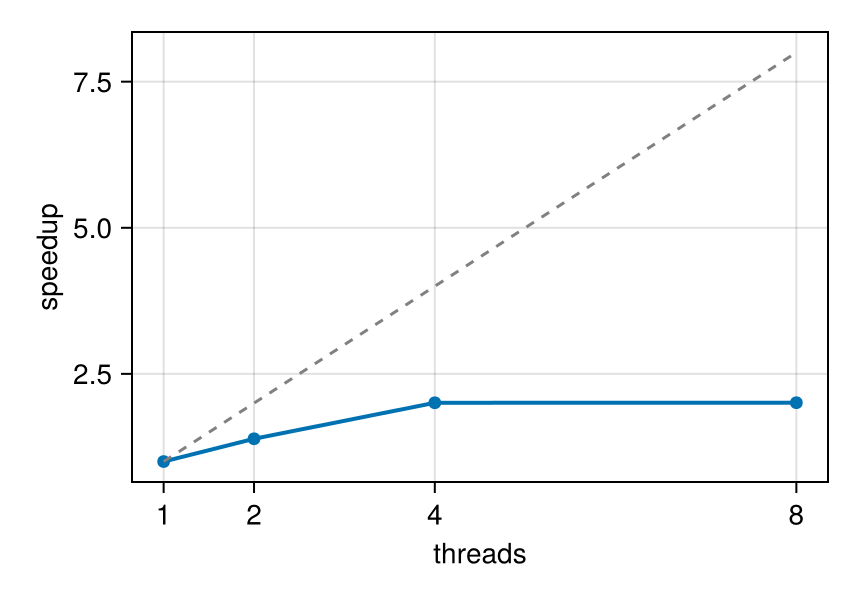

Julia for Simulation Analysis
This page is also an executable Jupyter notebook — open / download julia_for_simulation_analysis.ipynb. The notebooks run end-to-end and double as part of Mera's test suite.
Practical Julia habits for post-processing work: reproducible environments, what compile-time latency is (and is not), memory discipline on laptop-scale machines, and measured multithreading. Nothing here is Mera-specific dogma — these are the standard patterns of the language, applied to snapshot analysis.
1. Environments: make every project reproducible
Julia's package manager pins exact versions per project. In a fresh directory:
julia> ] # enter package mode
(@v1.12) pkg> activate . # this directory becomes the project
(myproject) pkg> add Mera CairoMakieThat writes Project.toml/Manifest.toml; anyone (including future you) reproduces the exact stack with ] instantiate. Start Julia with julia --project=. to use it.
2. Compile-time latency: pay once per session
Julia compiles functions the first time they run with a given argument type. The first projection of a session takes seconds of compilation; the second is pure runtime:
# Example-data root. Point this at your own simulation folder, or set the
# MERA_EXAMPLES environment variable; every path below is built from it.
MERA_EXAMPLES = get(ENV, "MERA_EXAMPLES", "/Volumes/FASTStorage/Simulations/Mera-Tests");
using Mera, CairoMakie
CairoMakie.activate!()
BASE = MERA_EXAMPLES # <-- change me
info = getinfo(100, joinpath(BASE, "RAMSES/spiral_clumps"), verbose=false)
gas = gethydro(info, verbose=false, show_progress=false)
proj() = projection(gas, :sd; pxsize=[0.4, :kpc], verbose=false, show_progress=false)
t1 = @elapsed proj() # includes compilation
t2 = @elapsed proj() # pure runtime
println("first call: ", round(t1, digits=2), " s second call: ", round(t2, digits=3), " s")*__ __ _______ ______ _______
| |_| | | _ | | _ |
| | ___| | || | |_| |
| | |___| |_||_| |
| | ___| __ | |
| ||_|| | |___| | | | _ |
|_| |_|_______|___| |_|__| |__|
Mera v1.8.0
first call: 12.07 s second call: 0.042 sKeep one session alive while you work (REPL, Jupyter, VS Code) instead of re-launching julia script.jl per plot — relaunching pays the compile tax every time.
3. Your own loops are fast — write them
Custom per-cell analysis needs no vectorisation gymnastics. A plain loop over columns compiles to native code; the one rule is to keep it in a function (globals are slow):
rho = getvar(gas, :rho, :g_cm3); T = getvar(gas, :T, :K); vol = getvar(gas, :volume, :cm3)
# mass-weighted mean temperature of dense gas — as an explicit loop
function mwT(rho, T, vol; thresh=1e-24)
num = 0.0; den = 0.0
@inbounds for i in eachindex(rho)
rho[i] > thresh || continue
m = rho[i] * vol[i]
num += m * T[i]; den += m
end
return num / den
end
mwT(rho, T, vol) # compile
t = @elapsed mwT(rho, T, vol)
println("mass-weighted T (ρ>1e-24 g/cm³): ", round(mwT(rho, T, vol), sigdigits=4),
" K — ", length(rho), " cells in ", round(1e3 * t, digits=2), " ms")mass-weighted T (ρ>1e-24 g/cm³): 67870.0 K — 590311 cells in 0.21 ms4. Memory discipline on laptop-scale machines
The levers, in the order to reach for them:
- Load less:
gethydro(info; lmax=…)caps the refinement level;xrange/yrange/zrangeload a spatial window (applied while reading — the full box never materialises). - Select variables:
gethydro(info, [:rho, :p])reads only what you need. - One snapshot at a time: in loops over outputs, let each object go out of scope before loading the next (the
timeserieshelper does this for you, withGC.gc()between snapshots). - Watch it:
usedmemory(gas)for objects,storageoverview(info)before loading.
small = gethydro(info; lmax=6, xrange=[-8., 8.], yrange=[-8., 8.], zrange=[-2., 2.],
center=[:bc], range_unit=:kpc, vars=[:rho], verbose=false, show_progress=false)
println(length(small.data), " cells (windowed, lmax=6, :rho only) vs ",
length(gas.data), " full (lmax=", gas.lmax, ")")
usedmemory(small)576 cells (windowed, lmax=6, :rho only) vs 590311 full (lmax=7)
Memory used: 481.366 KB
(481.3662109375, "KB")5. Multithreading, measured
Start Julia with threads (julia -t 8 or JULIA_NUM_THREADS=8) and Mera's heavy paths (reading, projections) use them automatically; every such function takes max_threads= to throttle a single call. Three rules of thumb:
- results are independent of the thread count (per-thread buffers, summed at the end);
- threading pays where the compute is. A light call on a small dataset is dominated by its serial parts (column access, setup) and shows little gain — an axis-aligned projection of this small fixture runs in ~0.6 s regardless of threads. Give the threads real work and the picture changes: below, the compute-heavy off-axis
:exactdeposit kernel on the same data; - BLAS keeps its own thread pool — keep
Julia threads × BLAS threadswithin your core budget.
Measured on this machine (8 Julia threads; illustrative, not a benchmark — your times will differ):
println("Julia threads: ", Threads.nthreads())
# compute-heavy workload: off-axis projection with the analytic :exact deposit kernel
heavy(nt) = projection(gas, :sd; inclination=60, azimuth=30, pxsize=[0.05, :kpc],
binning=:exact, max_threads=nt, verbose=false, show_progress=false)
heavy(1) # compile once
nts = [1, 2, 4, 8]
times = [minimum(@elapsed(heavy(nt)) for _ in 1:2) for nt in nts]
for (nt, t) in zip(nts, times)
println(rpad("max_threads=$nt", 15), round(t, digits=2), " s speedup ×",
round(times[1] / t, digits=2))
end
fig = Figure(size=(430, 300))
ax = Axis(fig[1, 1], xlabel="threads", ylabel="speedup", xticks=nts)
lines!(ax, nts, times[1] ./ times, linewidth=2); scatter!(ax, nts, times[1] ./ times)
lines!(ax, nts, Float64.(nts), linestyle=:dash, color=:gray) # ideal
figJulia threads: 4
max_threads=1 105.42 s speedup ×1.0
max_threads=2 75.87 s speedup ×1.39
max_threads=4 52.57 s speedup ×2.01
max_threads=8 52.54 s speedup ×2.01
The dashed line is ideal scaling; the gap to it is the serial fraction. Throttle individual calls (max_threads=4) when you run several analyses at once or share the machine. The examples throughout these docs use at most 8 threads — treat that as a sensible laptop ceiling, not a recommendation to buy more cores.
6. Where to go next
- First Steps — the full introductory tutorial.
- Coming from Other Analysis Tools — concept mapping + one complete workflow.
- Migration cheat sheet — Python/MATLAB/IDL syntax side by side.
- Multi-Threading guide — the full threading reference.